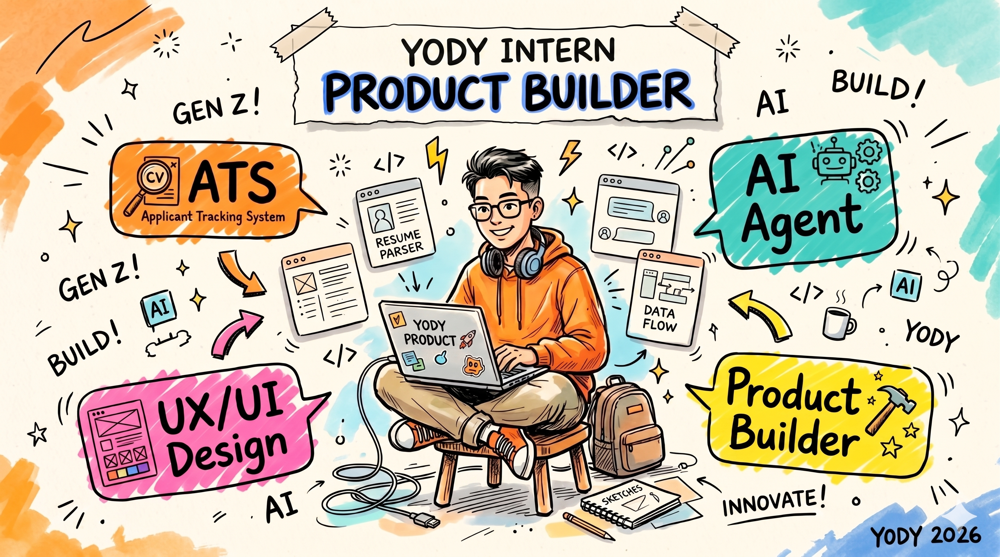

YODY Intern Product Builder
Chương trình thực tập 3 tháng — AI-First · Vibe Coding · Ship Fast

Idea → Build (AI-First) → Ship → Measure → Learn → Iterate
Tổng quan chương trình
Trong thời đại AI phát triển mạnh mẽ, YODY — thương hiệu thời trang hàng đầu Việt Nam — nhận thấy cơ hội lớn: không cần phải là kỹ sư phần mềm mới có thể xây dựng sản phẩm số. Chương trình Intern Product Builder ra đời để tạo ra những người trẻ có Builder Mindset, giải quyết bài toán thực tế bằng AI.

Mục tiêu chính
Claude, Cursor, n8n, Google AI Studio la cong cu chinh. Không cần viết code từ số 0 — nghĩ đúng, dùng AI đúng.
Không cần chuyên môn kỹ thuật sâu. Sẵn sàng học công cụ AI để build và ship sản phẩm.
Không chờ hoàn hảo mới ra mắt. Ship sớm, đo lường, học hỏi, cải tiến liên tục.
Mọi thứ build ra phải giải quyết bài toán thật. Luôn hỏi: giải quyết bài toán gì? Ai hưởng lợi? Đo lường sao?

Giá trị hai chiều
| Bên | Giá trị nhận được |
|---|---|
| Intern | Kỹ năng dùng AI để build product; kinh nghiệm ship sản phẩm thật; portfolio 4 sản phẩm thực tế |
| YODY | 4 sản phẩm/tính năng hoạt động thực tế; phát hiện talent thế hệ mới; giải quyết bài toán kinh doanh |
| Người dùng cuối | HR có ATS tiện lợi; QA tự động; quy trình được kiểm soát; lãnh đạo có báo cáo nhanh |
Phân bổ thời gian

Build & Prototype với AI — dùng AI tools để xây dựng và lặp lại nhanh
Khám phá & Định nghĩa bài toán — phỏng vấn người dùng, hiểu pain point
Vận hành chu kỳ phát triển — sprint, UAT, nghiệm thu
Đo lường, báo cáo, chia sẻ kết quả — KPI, lessons learned
Bốn sản phẩm phát triển
| # | Sản phẩm | Mô tả | Mục tiêu | Ưu tiên |
|---|---|---|---|---|
| 1 | ATS | Hệ thống quản lý toàn bộ quy trình tuyển dụng: đăng tin, nhận CV, pipeline Applied→Offer/Reject | MVP hoàn chỉnh, sẵn sàng deploy | CAO (Ưu tiên) |
| 2 | Agent QC | Agent AI tự động kiểm tra chất lượng website: UI errors, broken links, responsive, load time, SEO | Agent hoạt động, >=10 test case | CAO |
| 3 | Agent Tham Dinh | Agent kiểm tra hoạt động/quy trình có tuân thủ nội bộ không (phiếu giá bán, dữ liệu nhập hệ thống) | Agent cho >=3 quy trình, accuracy >=80% | CAO |
| 4 | Agent Bao Cao | Agent tổng hợp báo cáo tuần/tháng từ Huly: completed tasks, issues, velocity, metrics | MVP + scheduled report + on-demand | Trung bình |
1. Hệ thống ATS Ưu tiên cao nhất
Người dùng chính
- Phòng Nhân sự (HR) — quản lý toàn bộ quy trình
- Các Phòng ban (Hiring Manager) — xem & đánh giá ứng viên
Tính năng MVP (Must-Have)
| Nhóm tính năng | Chi tiết |
|---|---|
| Quản lý tin tuyển dụng | Tạo, đăng, quản lý JD; phân loại theo phòng ban/vị trí |
| Nhận & lưu trữ hồ sơ | Form ứng tuyển online; upload CV; lưu thông tin cấu trúc hóa |
| Pipeline quản lý | Applied → Screened → Interviewed → Offer/Reject; chuyển status |
| Tìm kiếm & lọc | Tìm nhanh theo tên, kỹ năng, trạng thái, phòng ban |
| Analytics & báo cáo | Time-to-hire, conversion rate, số lượng ứng viên/vị trí |
| Tích hợp email | Thông báo tự động khi có ứng viên mới hoặc thay đổi status |
KPI thành công
2. Agent QC Website YODY Ưu tiên cao

Agent AI tự động kiểm tra chất lượng website YODY (qa.yody.vn). Kiểm tra: lỗi giao diện, broken links, responsive design, load time, SEO basics. Chạy định kỳ & báo cáo lỗi tự động vào Slack/Email.
Tính năng MVP
- Browser automation — Selenium/Playwright tự động crawl và kiểm tra
- Test cases tự động — UI errors, broken links, responsive, load time, SEO basics
- Báo cáo tự động — Sinh report dạng HTML/Markdown, dễ đọc
- Slack integration — Webhook gửi kết quả ngay khi phát hiện lỗi
- Scheduling — Chạy định kỳ (cron job), ít nhất 2 lần/tuần
Tiêu chí nghiệm thu
Agent chạy tối thiểu 2 lần/tuần
Phát hiện được >=50% lỗi so với manual testing
< 20% báo cáo sai
Phủ >=80% pages website
3. Agent Thẩm Định Quy Trình Ưu tiên cao
.png)
Agent AI kiểm tra & xác thực xem hoạt động/quy trình có tuân thủ quy định nội bộ không. Ví dụ: kiểm tra phiếu điều chỉnh giá bán có đủ cấp phê duyệt không, hay kiểm tra tính hợp lệ của dữ liệu nhập vào hệ thống.
Tính năng MVP
- Rule engine — Định nghĩa và lưu trữ các quy tắc kiểm định
- Data integration — Kết nối với các nguồn dữ liệu nội bộ
- Automated validation — Tự động kiểm tra theo lịch hoặc theo sự kiện
- Alert system — Gửi cảnh báo qua Slack/Email khi vi phạm
- Dashboard — Hiển thị kết quả thẩm định, lịch sử, audit trail
- Audit log — Ghi lại đầy đủ mọi kiểm định và kết quả
KPI thành công
4. Agent Tổng Hợp Báo Cáo (Huly PM) Ưu tiên trung bình

Agent AI tự động tổng hợp báo cáo công việc tuần/tháng từ Huly project management. Tổng hợp: completed tasks, open issues, effort spent, velocity, metrics. Tạo báo cáo dạng email/markdown, hoặc slide tự động.
Tính năng MVP
- Huly API integration — Kéo dữ liệu từ Huly: tasks, issues, sprint data
- Metrics calculation — Tính velocity, completion rate, effort distribution
- Report generation — Tạo report dạng HTML/Markdown với charts
- Email delivery — Gửi report tự động theo lịch (weekly/monthly)
- On-demand request — User có thể request báo cáo bất cứ khi nào
- Filter by team/project — Lọc báo cáo theo team hoặc dự án cụ thể
Lộ trình 3 tháng tổng quát
Chương trình chia thành 12 tuần (3 tháng), mỗi sprint 2 tuần với 4 giai đoạn chính.

Phân bổ timing các sản phẩm
| Sản phẩm | Tháng 1 | Tháng 2 | Tháng 3 | Ưu tiên |
|---|---|---|---|---|
| ATS | Spec & Design 100% | Build & Test 100% | UAT & Deploy 100% | Cao nhất |
| Agent QC | Ramp up tools 20% | Build & Iterate 100% | Testing & Tune 100% | Cao |
| Agent Tham Dinh | Study process 20% | Build agent 100% | UAT & Deploy 100% | Cao |
| Agent Bao Cao | Study Huly 20% | Build & Schedule 80% | Finish & Tune 100% | Trung bình |
Chu kỳ phát triển
Khám Phá & Phân Tích
Tuần 1-4 (Tháng 1) — Phỏng vấn stakeholder, hiểu pain point, map user flow, lên spec
Xây Dựng Prototype
Tuần 5-8 (Tháng 2) — Build features, iterate nhanh, ship early, internal testing
Test & Feedback
Tuần 9-10 (Tháng 2.5) — UAT với stakeholder, thu thập feedback, fix bugs, optimize
Deploy & Handover
Tuần 11-12 (Tháng 3) — Production setup, training user, documentation, monitoring
Lịch chi tiết theo tuần
Tháng 1: Khám phá & Xây dựng MVP
| Tuần | ATS | Agent QC | Agent Tham Dinh | Agent Bao Cao |
|---|---|---|---|---|
| W1 | Problem Brief, User Flow, Wireframe | Ramp-up Tools, Setup | Ramp-up Tools, Setup | Ramp-up Tools, Setup |
| W2 | User Stories, AC, Tech Stack, DB Schema | QA Process Review | Compliance Process Review | Huly API Study |
| W3 | DB Setup, API Design, Auth, Login UI | Agent Framework Setup | Process #1 Criteria Def. | Report Template Design |
| W4 | CRUD, CV Upload, Status Pipeline | Test Case #1-5 Built | Agent #1 Prototype Working | Report Data Pull Working |
Tháng 2: Scale & Tích hợp
| Tuần | ATS | Agent QC | Agent Tham Dinh | Agent Bao Cao |
|---|---|---|---|---|
| W5 | Search/Filter, Batch Upd., Notifications | Test #6-10, Report Gen. | Agent #2 & #3 Criteria | Metrics Calc., Text Format |
| W6 | Analytics Dashboard, Export | Slack Int., Schedule Setup | Agents for 2-3 Processes | HTML Format, Charts/Tables |
| W7 | UAT #1, Bug Fix, Perf. Tune | UAT With QA, Logs | Dashboard Int., Workflow | Email, On-demand Filter |
| W8 | UAT #2, Train HR, Deploy Prep | Accuracy Tune, Train QA | UAT Fix, Rules Optim. | Dashboard, Team Filter |
Tháng 3: Finalize & Handover
| Tuần | ATS | Agent QC | Agent Tham Dinh | Agent Bao Cao |
|---|---|---|---|---|
| W9 | Final UAT, Bugfix Prod. | Agent Running, False+ Tune | Tuning, Audit Setup | UAT, Content Refine |
| W10 | Deploy Prod., Monitor | Running, Monitor Log | Deploy Prod., Monitor | Deploy Prod., Monitor |
| W11-12 | Support, Feedback, Improve | Feedback, Cont. Improve | Feedback, Cont. Improve | Feedback, Cont. Improve |
Tiêu chí đánh giá thành công
Tiêu chí sản phẩm (Product Success)
| Sản phẩm | Tiêu chí thành công | KPI đo lường |
|---|---|---|
| ATS | MVP trên production; HR quản lý pipeline hoàn chỉnh; User adoption >=80% | Sử dụng/tuần; Time-to-hire giảm >=30%; Satisfaction >=4/5; Uptime >=99% |
| Agent QC | Agent chạy >=2 lần/tuần; Phát hiện >=80% lỗi; False positive <20% | Bugs detected vs manual; Accuracy rate; Coverage score; Execution time |
| Agent Tham Dinh | >=3 quy trình; Accuracy >=95%; Thời gian giảm >=50%; Zero error escape | Process coverage count; Accuracy rate; Time saved/month; Audit completeness |
| Agent Bao Cao | Báo cáo >=1 lần/tuần; Request >=3 lần/tháng; Delivery 100% on time | Report frequency; Stakeholder feedback >=4/5; Request count; On-time % |
Tiêu chí cá nhân (Intern Success)
Ship 4 sản phẩm thực từ ý tưởng → users. Product quality score, User feedback avg, Time-to-ship.
Dùng AI tools thành thạo: Claude, Cursor, n8n. % feature built with AI, Code quality, Development speed.
Giải thích được 'why' + 'who benefits' cho mỗi sản phẩm. Problem brief clarity, Business case quality.
Tự learn công cụ mới trong 1-2 tuần. Tool mastery speed, Mentor feedback, Doc quality.
Chủ động next step, không chờ hướng dẫn. Self-generated tasks count, Initiative score.
Giao tiếp tốt, thương lượng với nhiều bên. Communication quality, Feedback reception.
Yêu cầu & Năng lực
Yêu cầu ứng viên
| Tiêu chí | Chi tiết |
|---|---|
| Học vấn | Sinh vien nam 3-4 hoac moi tot nghiep tu bat ky nganh nao (Kinh tế, Quản trị, Marketing, IT, Thiết kế, v.v.) |
| Kinh nghiệm | Không yêu cầu kinh nghiệm chính thức. Điểm cộng: có side project, tool tự build, hoặc đã dùng AI tools |
| Kỹ năng kỹ thuật | Không yêu cầu biết lập trình. Sẵn sàng dùng AI tools như công cụ chính |
| Ngoại ngữ | Đọc hiểu tài liệu tiếng Anh ở mức cơ bản |
Phẩm chất cá nhân cốt lõi
Muốn tạo ra thứ gì đó có thể chạy, dùng, nhìn thấy được
Đưa AI vào trọng tâm tư duy, thiết kế và thực thi
Luôn hỏi: giải quyết bài toán gì? Ai hưởng lợi? Đo lường sao?
Thích ứng nhanh, ham học, cập nhật xu hướng AI
Chủ động, không chờ hướng dẫn từng bước
Giao tiếp tốt, thương lượng với nhiều bên liên quan
Bộ năng lực (Competency Framework)
Tư duy Sản phẩm & Người dùng
- Problem Framing — Xác định bài toán cần giải quyết
- User Empathy & Discovery — Đặt câu hỏi để hiểu nhu cầu người dùng
Xây dựng Sản phẩm với AI
- AI-Driven Prototyping — Dùng AI để prototyping và build tính năng cơ bản
- No-Code Automation — Sử dụng công cụ no-code/low-code để tự động hóa
Vận hành Chu kỳ Phát triển
- Story Writing & Acceptance Criteria — Định nghĩa tiêu chí nghiệm thu
- Basic Backlog Management — Theo dõi và ưu tiên hóa công việc
- Basic Progress Report — Báo cáo tiến độ và kế hoạch hành động
Đo lường & Học hỏi
- Basic Success Metrics — Định nghĩa chỉ số thành công đơn giản
- Feedback Loop — Thu thập phản hồi và điều chỉnh giải pháp
- Build-Measure-Learn Mindset — Tư duy thực nghiệm: thử → đo → cải tiến
Giao tiếp & Cộng tác
- Communication & Storytelling — Diễn đạt ý tưởng với nhiều bên
- Feedback Reception — Nhận và xử lý phản hồi một cách xây dựng
- Self-Management — Tự quản lý thời gian trong môi trường linh hoạt
Phân bổ trách nhiệm
| Trách nhiệm | % Thời gian | Hoạt động chính | Sản phẩm đầu ra |
|---|---|---|---|
| Khám phá & Định nghĩa Bài toán | 20% | Phỏng vấn người dùng, tổng hợp vấn đề, thảo luận với PO | Problem Brief, User Stories, Wireframe |
| Build & Prototyping với AI | 50% | Dùng AI tools để build, iterate nhanh dựa trên phản hồi | Prototype, demo, script tự động hóa |
| Vận hành Chu kỳ Phát triển | 20% | Viết user stories, tham gia sprint review, nghiệm thu | Backlog cập nhật, tính năng được nghiệm thu |
| Đo lường & Chia sẻ Kết quả | 10% | Đo KPI, demo cho team, ghi lại bài học kinh nghiệm | Mini report, lessons learned |
Cam kết hai chiều
- Chủ động, không chờ hướng dẫn từng chi tiết
- Sẵn sàng học công nghệ mới trong thời gian ngắn
- Giao tiếp tốt, nêu vấn đề sớm trước khi bị block
- Ship nhanh, bàn giao, báo cáo thường xuyên
- Thu thập feedback & cải tiến liên tục
- Mentor (PO + Tech Lead) hỗ trợ chuyên môn và kinh nghiệm
- Cấp quyền truy cập hệ thống, API key, công cụ cần thiết
- Tài nguyên infra đầy đủ để build và deploy
- Team stakeholder phản hồi nhanh chóng (24-48h)
Intern Product Builder → Junior Product Builder (Full-time) → Senior Product Builder → Product Owner / Tech Lead

"Vị trí này không yêu cầu bạn xuất phát từ ngành công nghệ. Điều quan trọng là bạn thích xây dựng thứ gì đó có ích, nghĩ được bằng tư duy kinh doanh, không sợ học công nghệ mới và liên tục cập nhật các xu hướng AI."
Phòng Công nghệ & Chuyển đổi số · YODY · 2026
Tài liệu tổng hợp từ 4 nguồn: Intern Product Builder Ver 1.0, Kế hoạch Tổng quan, Program Overview HighLevel, Chương trình Thực tập 3 Tháng